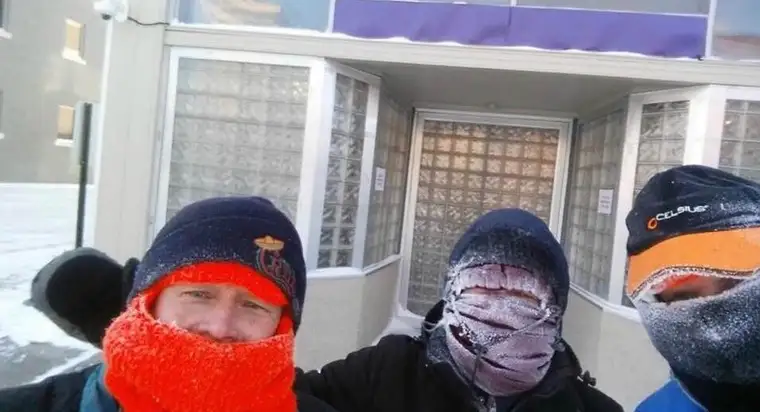

I’m writing this month’s column on Jan. 30, the day our state is
breaking temperatures with its dangerous frigidity. Though hopefully
it’s a distant memory by now, we’ll likely look back on this day in
coming years and shiver.
Schools have been closed for two days. My son has stayed busy tossing boiling hot water into the air to see the vapor cloud above him form like a nuclear mushroom, while others have blown bubbles outside to watch them turn into globes that float a bit before bursting into a puff of icy powder. I keep thinking of the saying, “When hell freezes over,” and wonder if it has.
Despite the dangerously chilled weather however, the Red River Women’s Clinic is open for business. Though many real medical facilities have closed shop for the day, the babies won’t stop growing for our convenience, I guess, so sadly, the abortions must go on.
Last night, I read a Facebook post from said facility calling for abortion escorts to show up, despite the horrifically cold weather. They offered helpful tips for surviving the sidewalk including, “the righteous flame of indignation,” “the heartwarming action of caring for strangers,” and “the holy trio: coffee, cocoa, and chemical hand warmers!” Finally, they wrote, “Dress warm, you brave and wonderful people!”
Earlier, I’d texted the group of my women friends who gather regularly to pray on the sidewalk. “This goes against everything I’ve ever said here, but I implore you all. Do not pray on the sidewalk tomorrow. Pray at home. It is dangerous weather to be standing for more than a few minutes. There are limits to everything. Even sidewalk sacrifice.”
Most opted to pray, secure in our houses, the Sorrowful Mysteries of the Rosary, in solidarity and for the women with abortion appointments on this dangerously cold day. However, some of the men who pray with us regularly were determined to show up. Hearing this, I winced and prayed.
One of these heroes shared a selfie of three of them bundled up to their noses, only frosted stocking caps and eye slits showing. “No clinic escorts today, so we’re getting free reign to talk to the women going in,” the selfie-taker wrote on Facebook.
Later, he shared that six prayer advocates had come and zero escorts.
Despite my worry about those crazy enough to turn out to pray, I saw the shining witness of these men. The facility itself couldn’t drudge up its volunteers to be there, despite pleas and enticing incentives.
“You are the light of Christ!” someone commented to the men. “Imagine what Jesus is doing today. He is high-fiving you with an additional smiling frost face all bundled up. Thank you for bringing his care and love to the neediest in Fargo today!”
“God bless you all,” said another, adding, “It’s too cold for Satan, I guess.”
“He likes warmer temps I suppose,” another quipped.
Though moments of humor in a tragic situation, these comments held truth. The absence of blue escort vests turned out to be a witness, too.
Here are my takeaways on why the prayer advocates won the battle, at least for today.
First, we know this isn’t about abortion alone. It’s about bringing souls to Christ, shining the way not just to a regret-free life here, but helping reveal the possibility of an eternal dance of life in heaven, for mothers, babies, fathers, and everyone connected to the child set for slaughter.
Two, at the end of the day, when push comes to shove on the sidewalk, Satan really has no power compared to the goodness that comes from God alone. Those men were able to withstand today’s temperatures because of their big hearts and extra-strength hand-warmers, yes, but also, because they knew the grace of God would be with them.
While I do not recommend everyone pray on the sidewalk on such a day, I can step back at this moment, in awe of what God can do to move our hearts, even in the most inconceivably harsh circumstances, and praise him for that.
Now, I should go see if my car still starts, but before I dash off, I urge you to mark March 29 on your calendars to see the movie Unplanned about former Planned Parenthood director Abby Johnson’s flight from the abortion industry. Bring a friend. You won’t regret it.
[Note: I write about my experiences on the sidewalk Downtown Fargo on Wednesday, the day abortions happen at our state’s only abortion facility, for New Earth magazine — the official news publication of the Fargo Diocese. I hope you find “Sidewalk Stories” helpful in understanding the truth about abortion and how it plays out tragically each week here in Fargo, N.D. The preceding ran in New Earth’s March 2017 issue.]